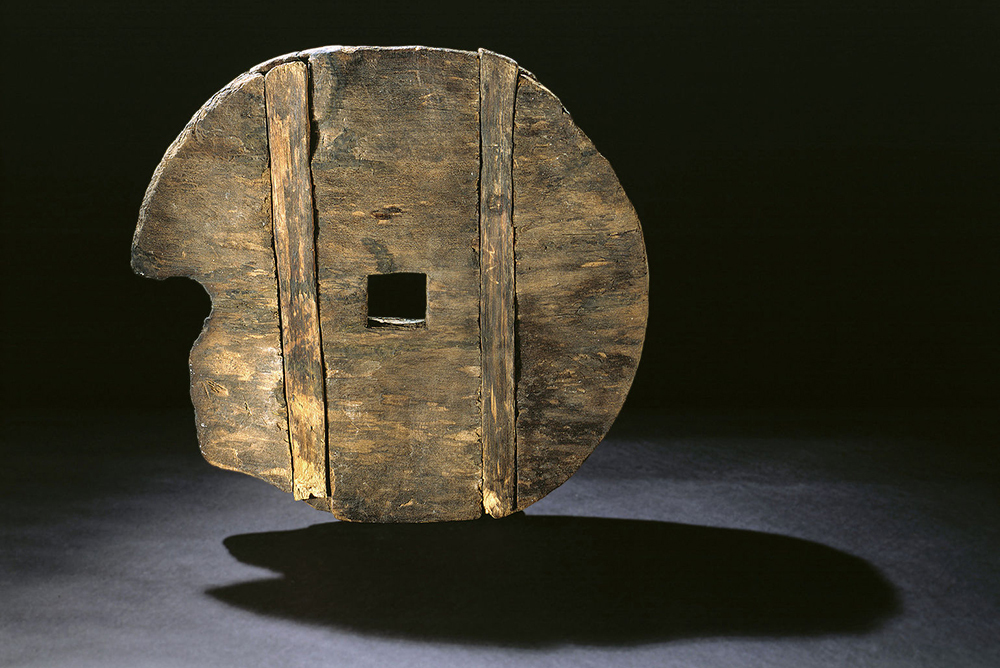

История колеса затеряна в веках, как и сами древние колеса, — кто и когда изобрел это величайшее чудо инженерной мысли, неизвестно. Свидетельства о первых колесах из цельного куска дерева (более легкие со спицами появились намного позже) относятся к территории современной Словении. По крайней мере в 20 км к югу от Любляны найдено древнейшее деревянное колесо, возраст которого — около 5350 лет. Ученые определили, что оно когда-то было частью телеги.
Деревянные колеса чуть более поздней датировки найдены и в Сирии, на территории бывшей Месопотамии. Одни из самых древних в этом регионе обнаружены при раскопках поселения Аль-Хасеке, и датированы XXXIII–XXXII веками до н. э. Похоже, колеса в Месопотамии и Европе появились почти одновременно. Многие ученые, впрочем, считают, что в колыбели цивилизации, Месопотамии, они все же возникли раньше.
Колесо — это основа транспорта: стало проще перевозить людей и товары, а еще улучшилась тактика ведения войны — появились боевые колесницы.
